Personal project in development built in Unity. First-person puzzle adventure built in Unity.
You explore an ancient temple that connects 3 unique biomes, each filled with environmental puzzles inspired by The Witness, The Room and Uncharted. All clues are embedded directly into architecture, materials and symbols, creating a slow, atmospheric journey through a mystical forgotten civilization.
ZoneCity is a runner prototype built around exploring a compact city surrounded by dense forest.
The player moves through streets, alleys and small green areas to find and collect 10 hidden artifacts.
The flow is shaped by the contrast between urban structure and nature: clean lane patterns, clear visual
markers and rhythmic environmental changes maintain readability and keep the experience engaging
along the entire route.
UnityHybrid-casualPatterns & progression
Runner Prototype
Three-lane runner prototype focusing on camera feel, speed curves, hazard telegraphing
and smooth game rhythm.
UnityRunnerLane gameplay
←→
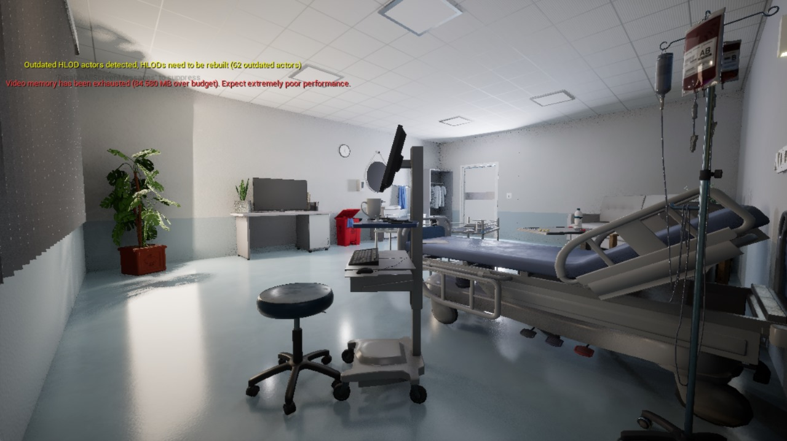
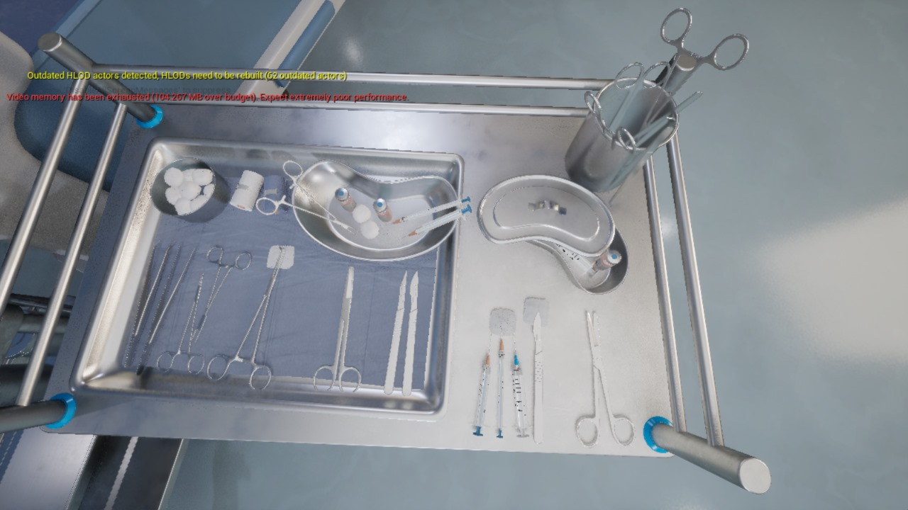
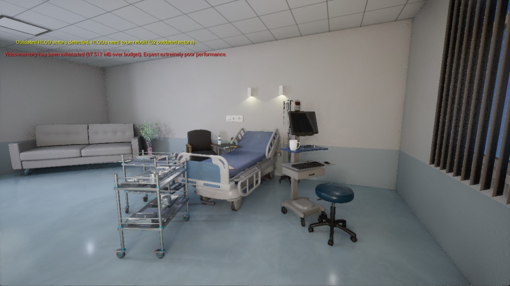
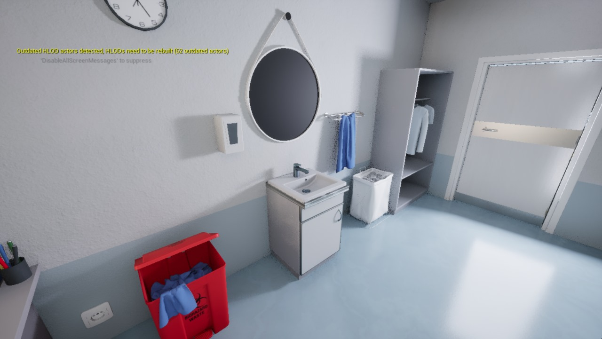
Medical VR Training Simulator
VR simulator focused on clear learning flow, realistic spatial layout and stable performance.
I built training environments and designed the in-VR UI/UX so medical students could complete practice tasks using an interactive tablet system.
Unreal Engine 5VR SimulatorLevel Layout & Flow
About
I’m a Level Designer focused on building readable, atmospheric spaces for games and simulations. I work with Unity and Unreal Engine 5, creating everything from hybrid-casual runners to first-person puzzle adventures and VR training environments.
My experience includes production-ready level design at 24 Play LLC, VR medical simulators for Khalifa University, interactive 3D tours for commercial projects and environment-driven UX for e-commerce platforms. I combine technical understanding, strong visual composition and player-centric thinking to design spaces that guide, teach and immerse.
I’m currently developing Temple of the Mind — a first-person puzzle adventure with five biomes, environmental riddles and a focus on architectural storytelling. I’m steadily moving toward building full exploration-based experiences for PC and console.


 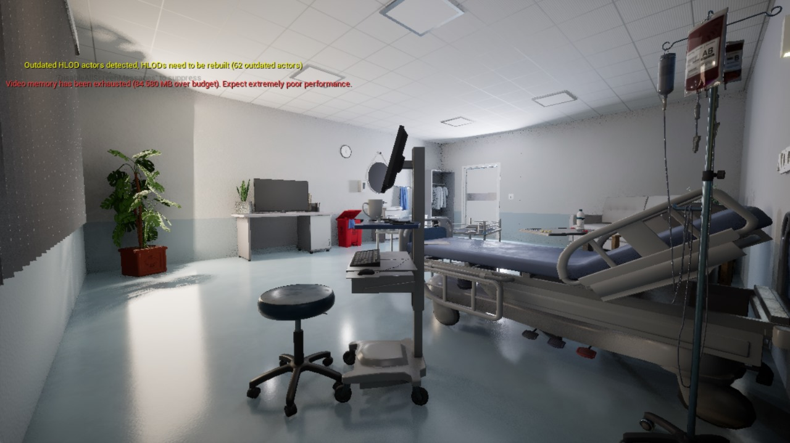
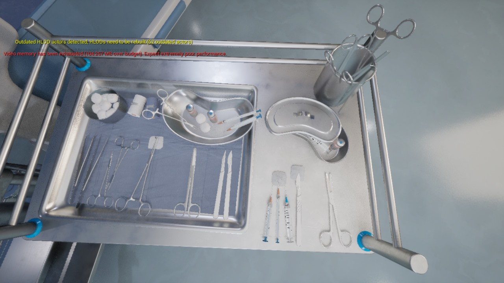
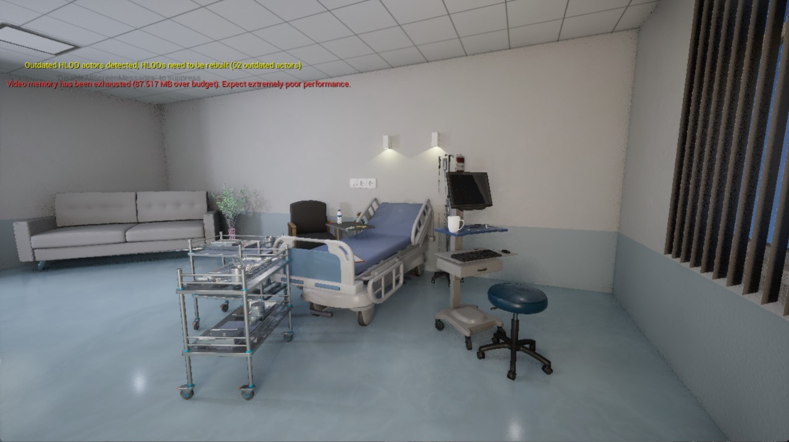
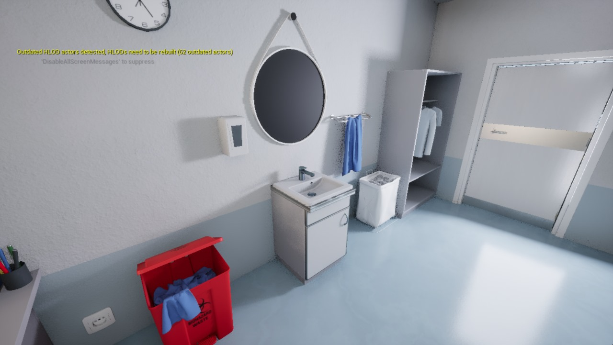
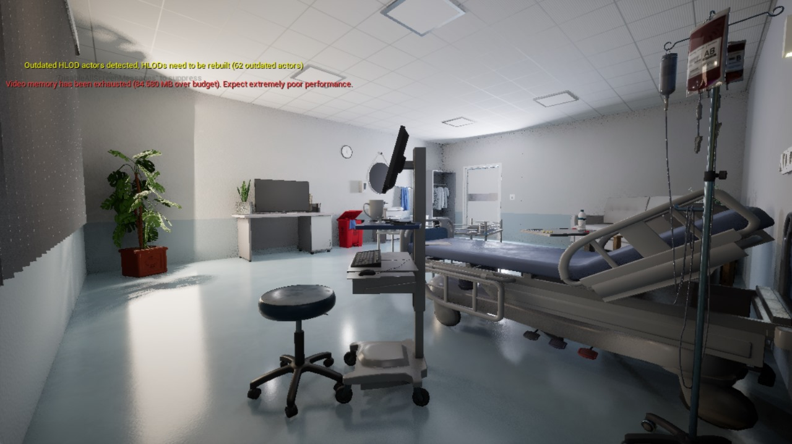
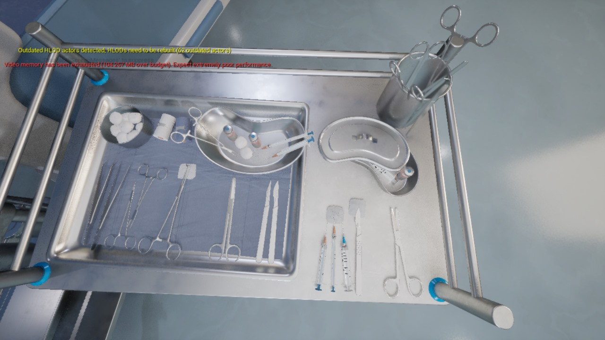
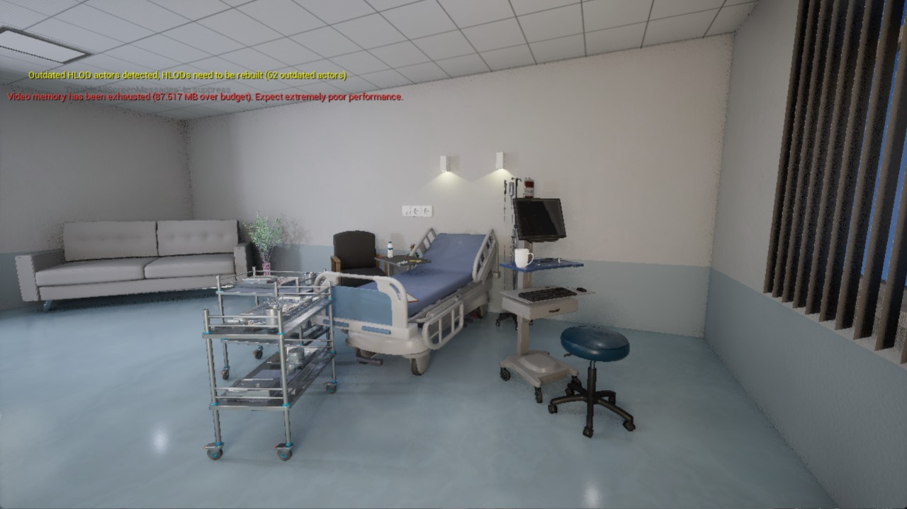
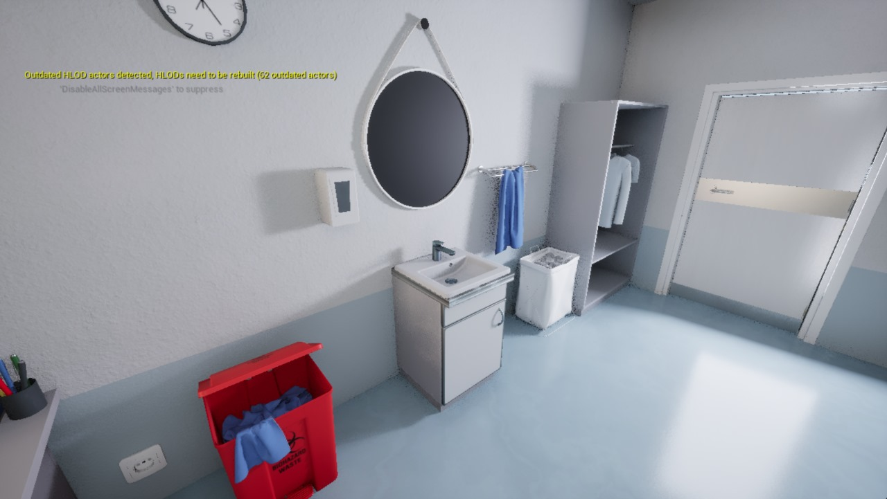